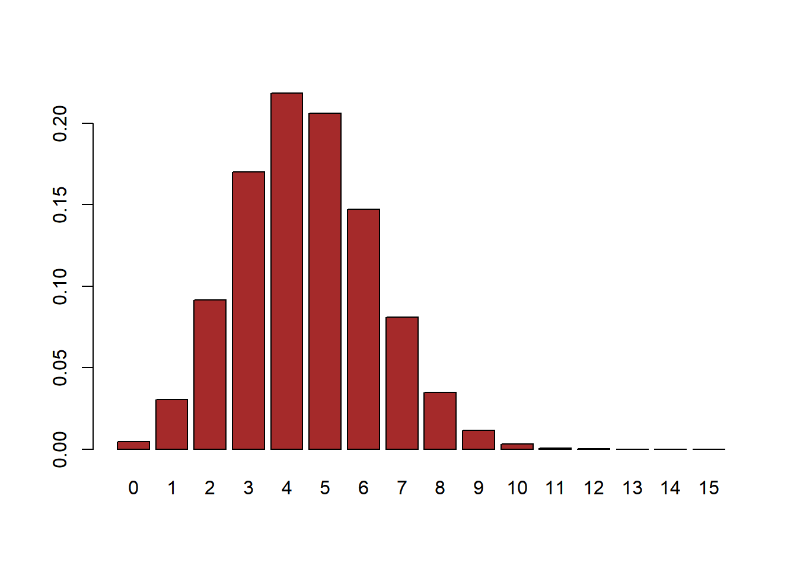
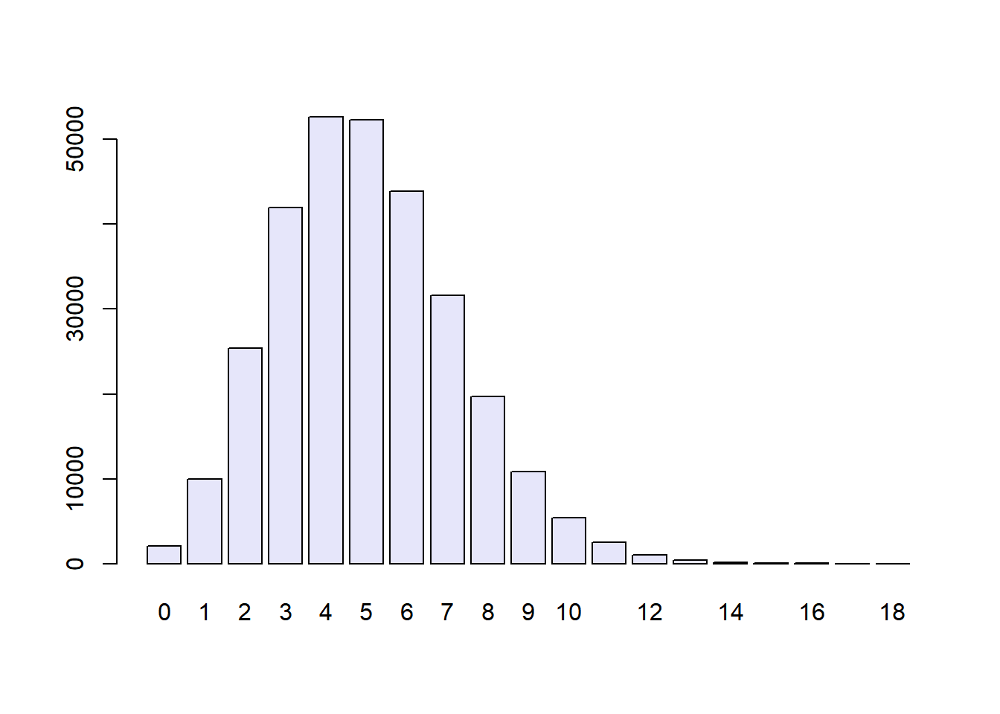
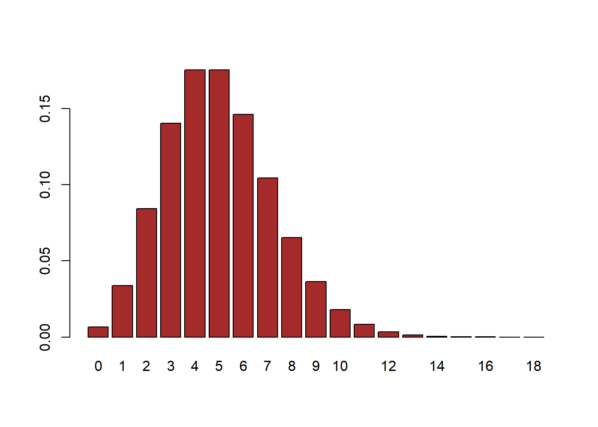

rbinom(15, prob = 0.5, size = 1) [1] 1 1 1 0 1 1 1 1 1 0 0 0 0 0 1Informally, we usually think of probability as a number that describes the likelihood of some event occurring, which ranges from zero (impossibility) to one (certainty).
To formalize probability theory, we first need to define a few terms:
Let’s say that we have a sample space defined by N independent events, \({E_1, E_2, ... , E_N}\), and \(X\) is a random variable denoting which of the events has occurred. \(P(X=E_i)\) is the probability of event \(i\):
These definitions allow us to examine simple probabilities - that is, the probability of a single event or combination of events.
However, we often wish to determine the probability of some event given that some other event has occurred, which are known as conditional probabilities.
To compute the conditional probability of A given B (which we write as \(P(A|B)\), “probability of A, given B”), we need to know the joint probability (that is, the probability of both A and B occurring) as well as the overall probability of B:
\[ P(A|B) = \frac{P(A \cap B)}{P(B)} \]
That is, we want to know the probability that both things are true, given that the one being conditioned upon is true.
The term “independent” has a very specific meaning in statistics, which is somewhat different from the common usage of the term. Statistical independence between two variables means that knowing the value of one variable doesn’t tell us anything about the value of the other. This can be expressed as:
\[ P(A|B) = P(A) \]
That is, the probability of A given some value of B is just the same as the overall probability of A.
A probability distribution describes the probability of all of the possible outcomes in an experiment. To help understand distributions and how they can be used, let’s look at a few discrete probability distributions, meaning distributions which can only output integers.
Tossing a coin has two possible outcomes. This simple experiment, called a Bernoulli trial, is modeled using a so-called Bernoulli random variable.
R has special functions tailored to generate outcomes for each type of distribution. They all start with the letter r, followed by a specification of the model, here rbinom, where binom is the abbreviation used for binomial.
Suppose we want to simulate a sequence of 15 fair coin tosses. To get the outcome of 15 Bernoulli trials with a probability of success equal to 0.5 (a fair coin), we write:
rbinom(15, prob = 0.5, size = 1) [1] 1 1 1 0 1 1 1 1 1 0 0 0 0 0 1We use the rbinom function with a specific set of parameters (called arguments in programming): the first parameter is the number of trials we want to observe; here we chose 15. We designate by prob the probability of success. By size=1 we declare that each individual trial consists of just one single coin toss.
For binary events such as heads or tails, success or failure, CpG or non-CpG, M or F, Y = pyrimidine or R = purine, diseased or healthy, true or false, etc. we only need the probability \(p\) of one of the events (which we, often arbitrarily, will label “success”) because “failure” (the complementary event) will occur with probability \(1-p\). We can then simply count the number of successes for a certain number of trials:
rbinom(1, prob = 0.3, size = 15)[1] 6This gives us the number of successes for \(15\) trials where the probability of success was \(0.3\). We would call this number a binomial random variable or a random variable that follows the \(B(15, 0.3)\) distribution.
We can plot the probability mass distribution using dbinom:
probabilities <- dbinom(0:15, prob = 0.3, size = 15)
barplot(probabilities, names.arg = 0:15, col = "brown")
For \(X\) distributed as a binomial distribution with parameters \((n,p)\), written \(X ~ B(n,p)\) the probability of seeing \(X=k\) sucesses is: \[ P(k; n,p) = P(X=k) = \binom{n}{k} p^k(1-p)^{n-k} \]
When the probability of success \(p\) is small and the number of trials \(n\) large, the binomial distribution \(B(n,p)\) can be faithfully approximated by a simpler distribution, the Poisson distribution with rate parameter \(\lambda = np\)
The Poisson distribution comes up often in biology as we often are naturally dealing very low probability events and large numbers of trials, such as mutations in a genome.
simulations = rbinom(n = 300000, prob = 5e-4, size = 10000)
barplot(table(simulations), col = "lavender")
probabilities <- dpois(0:18, lambda=(10000 * 5e-4))
barplot(probabilities, names.arg = 0:18, col = "brown")
When modeling four possible outcomes, for instance when studying counts of the four nucleotides [A,C,G] and [T], we need to extend the binomial model.
We won’t go into detail on the formulation, but we can examine probabilities of observations using a vector of counts for each observed outcome, and a vector of probabilities for each outcome (which must sum to 1).
counts <- c(4,2,0,0)
probs <- c(0.25,0.25,0.25,0.25)
dmultinom(counts, prob = probs)[1] 0.003662109The materials in this lesson have been adapted from: - Statistical Thinking for the 21st Century by Russell A. Poldrack. This work is distributed under the terms of the Attribution-NonCommercial 4.0 International (CC BY-NC 4.0), which permits unrestricted use, distribution, and reproduction in any medium, provided the original author and source are credited and the material is used for noncommercial purposes. - Modern Statistics for Modern Biology by Susan Holmes and Wolfgang Huber. This work is distributed under the terms of the Attribution-NonCommercial-ShareAlike 2.0 Generic (CC BY-NC-SA 2.0), which permits unrestricted use, distribution, and reproduction in any medium, provided the original author and source are credited, the material is used for noncommercial purposes, and the same license is used for any derivative material.